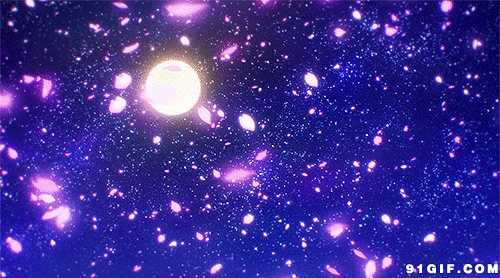

img图像标签属性简介
-
src：图像文件名及所在路径
-
align：对齐方式，水平：left、center、right，垂直：top、middle、bottom
-
width、height：宽度、高度，可是像素值或百分比（占浏览窗口宽度、高度的比例）
-
border：边框宽度，像素值
-
hspace、vspace：图像左右、上下间距，像素值
-
alt：图像替换文本，即当浏览器找不到指定图像文件时，将代而显示的文本
-
usemap：结合map、area标签定义热点区域，以便点击这些区域时能进一步操作
左右间距10像素、边框5像素，宽度、高度分别为40x40、60x60、80x80像素效果

图像宽度、高度分别为20%x20%、30%x30%、40%x40%效果